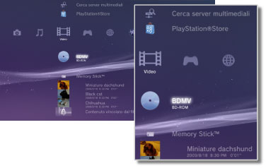

Video > Categoria Video
Categoria Video
Sotto  (Video) sono visualizzate le seguenti icone. Le icone visualizzate variano in base alle condizioni di utilizzo.
(Video) sono visualizzate le seguenti icone. Le icone visualizzate variano in base alle condizioni di utilizzo.

 |
Utilità dei dati dei BD | I dati amministrativi utilizzati da Blu-ray Disc (BD) sono stati salvati. |
|---|---|---|
 |
Cerca server multimediali | Consente di avviare la ricerca di server multimediali DLNA connessi alla stessa rete. |
 |
Server multimediale | Consente di connettersi ai server multimediali DLNA e riprodurre i file video memorizzati. L'icona visualizzata dipende dal tipo di server. |
 |
PlayStation®Store | Consente di visualizzare informazioni di PlayStation®Store. Questa icona viene visualizzata solo nei paesi e nelle regioni dove è disponibile il video store di PlayStation®Store. |
| BD-ROM/BD-R/BD-RE | Riproducono un BD (Blu-ray Disc). | |
 |
DVD-ROM / DVD-R / DVD+R / DVD-RW / DVD+RW | Riproducono un DVD o un disco AVCHD. |
 |
Disco di dati | Consente di riprodurre i file video salvati su dischi registrabili compatibili, ad esempio CD-R o DVD-R. |
 |
Memory Stick™ | Riproduce file video salvati su supporti Memory Stick™.* |
 |
SD Memory Card | Riproduce file video salvati su SD Memory Card.* |
 |
CompactFlash® | Riproduce file video salvati su CompactFlash®.* |
 |
PSP™ (PlayStation®Portable) | Riproduce file video salvati su supporti Memory Stick™ del sistema PSP™. |
 |
PSP™ (PlayStation®Portable) | Riproduce file video salvati nella memoria di sistema del sistema PSP™go. |
 |
Fotocamera digitale | Riproduce file video salvati su una fotocamera digitale compatibile con il sistema PS3™. |
 |
WALKMAN®/ATRAC Audio Device (WALKMAN®) | Consente di riprodurre file video salvati su un WALKMAN®/ATRAC Audio Device (WALKMAN®). |
 |
ATRAC Audio Device | Consente di riprodurre file video salvati su un ATRAC Audio Device. |
 |
Dispositivo USB | Riproduce file video salvati su un dispositivo di archiviazione USB. |
 |
Filmati fotocamera digitale | Riproduce file video salvati nella cartella DCIM del supporto di memorizzazione. |
|
(cartella) | Questa icona viene visualizzata per le cartelle create sul supporto di memorizzazione utilizzando un PC. |
 |
(file salvati sul disco rigido) | Riproduce file video salvati sul disco rigido del sistema PS3™. Vengono visualizzate immagini in miniatura. |
 |
(dati scaricati sul disco rigido) | Questa icona individua file video scaricati sul disco rigido. All'avvio, i dati vengono installati e il file video può essere riprodotto. |
| * |
Con alcuni modelli, per utilizzare supporti di memorizzazione è necessario disporre di un adattatore USB appropriato (non in dotazione). Quando utilizzato con un adattatore USB, il supporto di memorizzazione viene visualizzato come |
|---|
 (Dispositivo USB).
(Dispositivo USB).Note
- Per ulteriori informazioni sullo standard DLNA, vedere
 (Impostazioni) >
(Impostazioni) >  (Impostazioni di rete) > [Connessione al server multimediale] della presente guida.
(Impostazioni di rete) > [Connessione al server multimediale] della presente guida. - Affinché il sistema riproduca dischi Blu-ray Disc protetti da copyright a una risoluzione di 1080p, è necessario utilizzare un cavo HDMI per connettere il sistema a un dispositivo compatibile con lo standard HDCP (High-bandwidth Digital Content Protection).
- Le immagini in miniatura potrebbero non essere visualizzate per alcuni tipi di file video protetti da copyright.
- Quando si riproduce un BD con contenuto soggetto a restrizioni del filtro contenuti, la riproduzione sarà limitata in base al livello del filtro contenuti impostato nel sistema PS3™. Il livello del filtro contenuti dei BD può essere regolato sotto (Impostazioni) >
 (Impostazioni di sicurezza).
(Impostazioni di sicurezza). - Quando si riproduce un DVD con contenuto soggetto a restrizioni del filtro contenuti, potrebbe essere richiesta una password per riprodurre il contenuto. La password può essere configurata sotto (Impostazioni) > (Impostazioni di sicurezza).
- Il contenuto con restrizioni di Filtro contenuti è visualizzato come
 . È possibile abilitare la riproduzione di tale contenuto immettendo una password di 4 cifre. La password può essere impostata o modificata sotto (Impostazioni) > (Impostazioni di sicurezza).
. È possibile abilitare la riproduzione di tale contenuto immettendo una password di 4 cifre. La password può essere impostata o modificata sotto (Impostazioni) > (Impostazioni di sicurezza). - I dischi BD protetti sono visualizzati come
 . Per riprodurre il contenuto di questi dischi, immettere la password configurata dallo sviluppatore del disco.
. Per riprodurre il contenuto di questi dischi, immettere la password configurata dallo sviluppatore del disco. - Il contenuto noleggiato scaricato dal Video Store di PlayStation®Store viene visualizzato come
 .
. - In rari casi, i dischi e altri supporti potrebbero non funzionare correttamente quando riprodotti nel sistema PS3™. Tale problema è causato principalmente da variazioni del processo produttivo o della codifica del software.
- Se un dispositivo che non è compatibile con lo standard HDCP (High-bandwidth Digital Content Protection) viene collegato al sistema utilizzando un cavo HDMI, non è possibile emettere video e/o audio dal sistema.
Memorizzazione locale di Blu-ray Disc (BD)
Se durante la riproduzione di BD viene visualizzato un messaggio di errore indicante che lo spazio di memorizzazione locale è insufficiente, eliminare i file non necessari sul disco rigido per aumentare lo spazio libero.
La memorizzazione locale è un'area di memorizzazione di dati definita negli standard 1.1 / 2.0 del BD-ROM Profile. Questi dati sono stati memorizzati sul disco rigido del sistema PS3™.